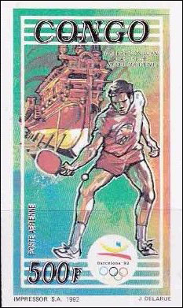
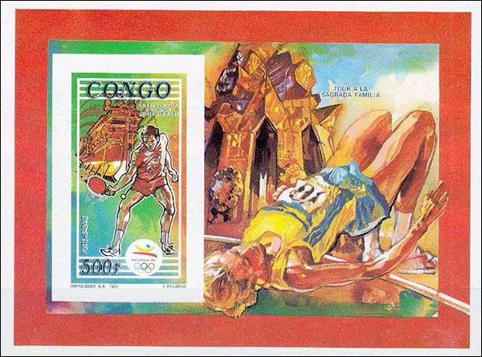
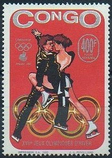
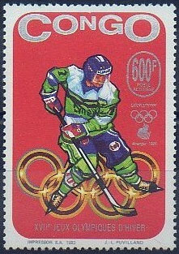

Timbres - émissions frauduleuses
Légaux, illégaux, abusifs ou quoi encore ?
Victor MANTA, PWO
Un ami m'a fait suivre un courriel d'un philatéliste qui s'interroge et demande des informations sur quelques timbres du Congo émis en 1992. Je mets ci-dessous uniquement les images du timbre non dentelé et du feuillet.

En regardant les images, nous apprenons notamment que ces timbres de la Poste aérienne sont émises en 1992 pour commémorer les Jeux Olympiques de Barcelone, ont été imprimés par Impressor S.A. et que le concepteur est J. Delarue.

Laissez-moi essayer d'en savoir plus au sujet de ces timbres.
- Le soupçon que ce soient des timbres illégaux est rapidement écarté. Si nous regardons la liste de timbres dénoncés à l ' UPU par différents organismes postaux dans le monde entier, nous constatons que les premiers timbres ont été dénoncés après 1996, par conséquent, nos timbres ne peuvent pas être mis dans cette catégorie.
- Un catalogue peut-il donner plus d'informations sur leur caractère présumé d' « abusif ». J'ai consulté un ancien catalogue Scott de 2008 et rapidement constaté que le CONGO n'a pas publié alors, comme pour quelques pays actuellement, des grandes quantités de timbres postaux. Pour cette raison, je ne les qualifierai pas de timbres « abusifs ».
- Et cela commence ici. Je n ' ai pas trouvé ces timbres listés dans le catalogue Scott de 2008 , ce qui pourrait-être un mauvais signe pour ces timbres. Mais j'ai vu que des timbres similaires sont listés (voir en bas : Congo P.R., 1993, Scott C416 - C417). Notre timbre est listé dans le catalogue Yvert & Tellier, mais uniquement le timbre seul (Poste aérienne N° 416).
 |
 |
- Le nom de l'imprimeur Suisse, Impressor S.A., est depuis longtemps dans mon mémoire associé à des activités suspectes au sujet desquelles j'ai écrit un article en 2002. Impressor avait le droit d'imprimer et de vende par des négociants n'importe quel nombre de feuillets, des timbres non-dentelés et des feuillets non-dentelés.
- De plus, c'est le seul imprimeur mentionné dans une circulaire de timbres illégaux par l'UPU et, probablement pas par hasard, qui concerne des timbres illégaux de la République du Congo).
Pour conclure, je classerais ces timbres dans la catégorie générale des émissions frauduleuses.
About the author. Victor Manta is the founder and the current president of the PWO. He is mostly interested in thematic (topical) stamps and in the philately on the Internet. His philatelic sites were multiple awarded in web sites philatelic competitions. He is also a well-known philatelic journalist, who published numerous philatelic articles on the web and in printed magazines.
|